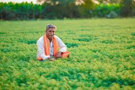
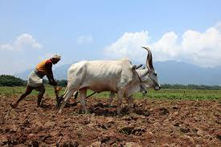

Discover the people behind your food and learn healthy eating habits

Ramesh is a passionate farmer from Tamil Nadu who practices natural farming. He believes that healthy soil produces healthy food. By avoiding harmful chemicals and focusing on traditional farming methods, Ramesh grows fresh vegetables that reach families directly through FarmDirect.
Through FarmDirect, his mission is to provide nutritious food while protecting the environment and supporting local agriculture.

Arockia Swamy is a dedicated farmer from Ramanathapuram, a district known for its dry climate and limited water resources. Farming here is extremely challenging because much of the underground water is salty and rainfall is unpredictable.
Despite these hardships, Arockia Swamy continues to cultivate crops with determination and hope. His hard work represents the resilience of farmers who struggle against nature every year to provide fresh food for our communities.
Through FarmDirect, his mission is to provide nutritious food while protecting the environment and supporting local agriculture.
Seasonal vegetables are fresher and richer in nutrients because they are harvested at the right time.
Spinach and other leafy vegetables are rich in iron, vitamins, and antioxidants that improve immunity.
Fresh farm products contain fewer preservatives and provide better nutrition than processed foods.